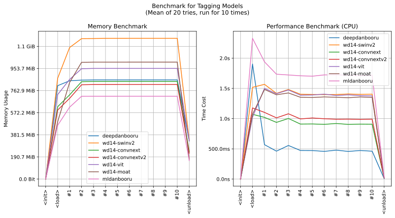

imgutils.tagging
- Overview:
Get tags for anime images.
This is an overall benchmark of all the danbooru models:

- imgutils.tagging.mldanbooru
- imgutils.tagging.wd14
- imgutils.tagging.deepdanbooru
- imgutils.tagging.format
- imgutils.tagging.overlap
- imgutils.tagging.blacklist
- imgutils.tagging.character
- imgutils.tagging.order
- imgutils.tagging.match